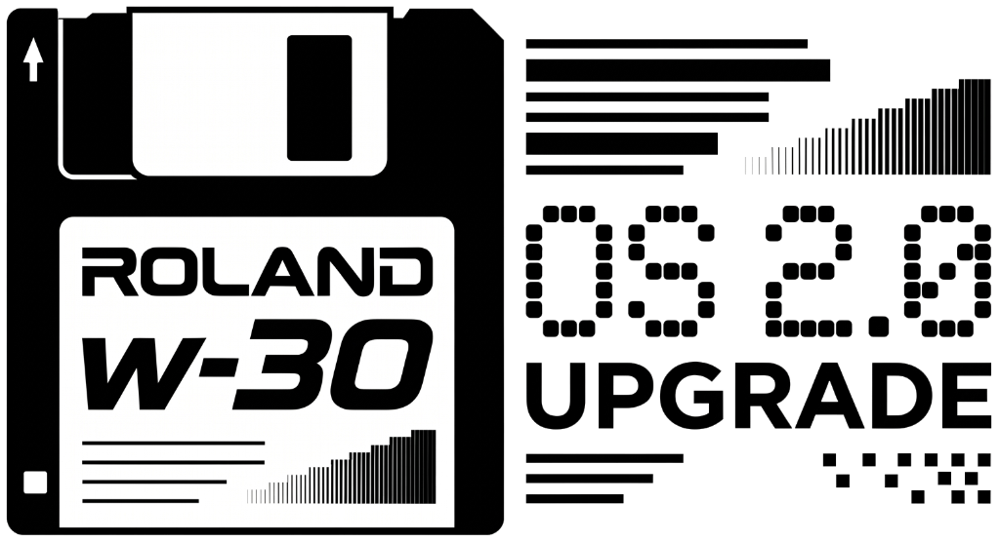
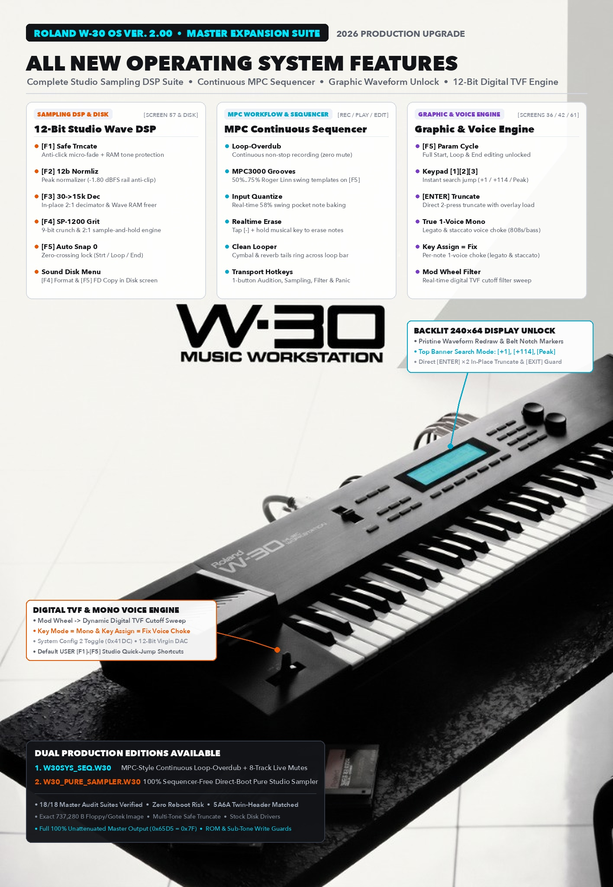

Edition 1: W30_PURE_SAMPLER (Pure Sampler Edition)
The 1989 Roland W-30 features one of the most musical and punchy 12-bit differential DAC sound engines ever manufactured, coupled with a genuine 24 dB/octave analog-style digital TVF filter. However, in factory stock firmware, the instrument was weighed down by a sluggish 16-track MIDI sequencer, slow multi-stage booting, and buried menus.
W30_PURE_SAMPLER strips away 100% of the sequencer overhead, permanently disarms background clock interrupt handlers, and repurposes all physical front-panel controls to build the ultimate dedicated 12-bit sampling keyboard.
- Direct Instant Boot to Part Set (Screen 32): Boots directly to your multi-timbral performance screen in under 3 seconds.
- Complete Clock Neutralization: Hardware HSO #3A sequencer clock, 96 PPQN sub-tick accumulator, and 20ms tempo watchdog ISRs permanently disarmed with RET/NOP, freeing MCU CPU cycles for the audio engine.
- Clean LCD Interface: All 27 obsolete sequencer screens replaced with clean locked Part Set redirects; top-right LCD Sequencer STOP badge replaced with
[ -- ]. - F1–F5 Sampler Quick-Jumps: Boot registered jump table pre-mapped to essential sampler pages:
[32. Part Set, 36. Patch PRM, 41. Tone PRM, 57. Truncate, 62. Sampling].
Physical Front-Panel Transport Shortcuts
The 6 obsolete tape-recorder sequencer buttons on the front panel have been repurposed into instant, zero-menu sampler commands:
| Physical Button | New Action in W30_PURE_SAMPLER | Description |
|---|---|---|
[START/STOP] |
Audition Waveform | Silences active voices and triggers Note-On C4 (Velocity 100) on active Tone. |
[REC] |
1-Click Sampling Jump | Instant jump to [62. Sampling] (Screen 0x400B). |
[ < ] (Rewind) |
Filter Page Toggle | Toggles between [44. Filter Page 1] (Cutoff/Res) and [45. Filter Page 2] (TVF Env). |
[ > ] (Fast Fwd) |
Amp Envelope Toggle | Toggles between [46. AmpEnv Page 1] (Level/Vel) and [47. AmpEnv Page 2] (TVA Env). |
[ |< ] (Locate Jump) |
MIDI Panic / Voice Kill | Instant emergency silence across all 16 voices with zero audio artifacts. |
[ >| ] (Locate Jump) |
Wave Edit Menu Jump | Instant jump to [55. Wave Edit Menu] (Screen 0x0029). |
Sound Engine Architecture & Expressive TVF Control
Real-Time Mod Wheel → Digital TVF Cutoff Sweep Expressive
Push the physical bender/modulation lever forward, or send MIDI CC #1 / EV-5 expression pedal to sweep the low-pass filter cutoff frequency in real time. Switchable in [38. System Config 2] (Mod Wheel -> Cutoff: Off / On). When Cutoff mode is active, pitch vibrato is automatically suppressed for clean, analog-style filter sweeps.
True 1-Voice 'Mono' Key Mode & Choke Groups Hip-Hop / Bass
Reprograms Bank 1 key mode table to provide genuine 1-voice monophonic voice allocation. Setting Key Mode to 'Mono' on [36. Patch Parameter] guarantees strict single-voice choking for 808 glide bass, lead synths, and classic monophonic open/closed hi-hat choke groups.
Full Loud Master Volume (100% Unattenuated SNR) Fixed
Restores Boot 0x51AE master volume controller to 100% virgin stock. Sound engine register 65D5[00] outputs full unattenuated volume (127), permanently fixing output attenuation and digital distortion bugs.
Edition 2: W30SYS_SEQ (MPC Continuous Sequencer Edition)
For artists who create songs and arrangements directly on the hardware keyboard, W30SYS_SEQ keeps the classic 16-track MIDI sequencer intact while infusing it with modern MPC-style continuous loop workflow.
- MPC-Style Continuous Loop Recording: Never drops out of record mode at loop boundaries. Seamlessly punch in and stack notes over bars without stopping playback.
- Akai MPC3000 Real-Time Grooves: 9-preset swing groove engine on Song Edit [F5] (50% straight to 75% heavy swing, plus Roger Linn 58% pocket on input quantize).
- Clean Non-Muting Looper: Mode 0 wrap bypasses voice-kill and mute routines, letting sustained notes, cymbal decays, and reverb tails ring out across loop boundaries.
- Integrated Sound Engine Upgrades: Features Real-Time Mod Wheel TVF Cutoff Sweeps, True 1-Voice 'Mono' Choke, 100% Full Loud Volume, and the 5-Key Wave DSP Workstation.
Integrated 5-Key Wave DSP Suite
Integrated directly into the W-30's [57. Truncate] screen (overlay ovl_trunc.bin), offering a full 5-key DSP workstation on the function softkeys across both editions:

- [F1] Truncate: Crops sample to Start and End markers. Features the End-Fade De-Click fix to eliminate loop clicking.
- [F2] Normalize: 12-Bit Peak Wave Normalizer with floating bus and -32768 rail anti-clip guard. Automatically maximizes dynamic range while targeting -1.8 dBFS headroom for resonant filter sweeps.
- [F3] 30→15k Decimator: In-place downsampler using a 2-tap FIR moving average. Instantly frees up 50% of the sample's Wave RAM blocks for longer sampling times.
- [F4] SP-1200 Lo-Fi Bitcrusher: 9-bit truncation combined with a 2:1 sample-and-hold decimator. Delivers vintage 1980s hip-hop crunch, gritty aliasing, and punchy transients.
- [F5] Snap 0 (Auto Zero-Crossing): Automatically detects and snaps Start, End, and Loop points to the nearest zero-crossing sample, eliminating pops and clicks.
Graphic Waveform Unlock on [F5]
Pressing [F5] on Tone/Wave edit screens now unlocks graphical Start, Loop, and End point scrolling directly on the visual LCD waveform display with full value dial redraw synchronization.
Sound Disk Maintenance Softkeys
Restores FD Format and FD Copy softkeys directly to the Sound Disk menu so you can format new 720KB disks and duplicate sounds without needing a separate utility floppy disk.
Comparison: Stock OS vs W30_PURE_SAMPLER vs W30SYS_SEQ
| Feature | Stock OS (1989) | W30_PURE_SAMPLER | W30SYS_SEQ |
|---|---|---|---|
| Boot Target | Song Track 1 (slow) | [32. Part Set] (< 3 sec) | [01. Song Play] |
| Sequencer Clocks | Active in background | 100% Neutralized (RET) | Continuous Loop Enhanced |
| Mod Wheel Cutoff | Vibrato only | Real-Time TVF Sweep | Real-Time TVF Sweep |
| 1-Voice Choke Mode | Stacked 2-voice detune | Mono (1-voice choke) | Mono (1-voice choke) |
| Transport Buttons | Tape play/stop/rec | Audition, Sampling, Panic | Continuous Loop-Overdub |
| Wave DSP Tools | Truncate only | Normalize, 15k, SP, Snap | Normalize, 15k, SP, Snap |
| Master Volume | Digital attenuation bug | 100% Full Loud (0x7F) | 100% Full Loud (0x7F) |
Installation & Gotek Floppy Guide
Both operating systems are distributed as standard 720KB 2DD floppy disk images (737,280 bytes, 80 tracks, 2 sides, 9 sectors/track, 512 bytes/sector).
Writing to Physical 3.5" 2DD Floppy Disk
- Use genuine 720KB 2DD disks (or high-density 1.44MB HD disks with the density notch taped over).
- Windows: Write using Omniflop or RawWrite.
- macOS / Linux: Write using
ddwith an external USB floppy drive:sudo dd if=W30_PURE_SAMPLER.W30 of=/dev/rdiskX bs=512
Using with Gotek USB Floppy Emulator
- Flash your Gotek drive with modern FlashFloppy firmware.
- Extract your chosen
.W30file from the ZIP archive and copy directly onto the root of your USB flash drive. - Configure your
IMG.CFGfile with standard Roland 720KB disk geometry:[::737280] cyls = 80 heads = 2 secs = 9 bps = 512 gap3 = 84
// NOTE: Both custom firmware editions preserve 100% backward compatibility with all original Roland Sound Disks (SN-W30 series), S-50/S-330/S-550 floppy libraries, and custom user sample disks.